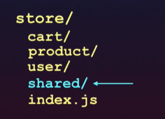

State Management
Vue components are the building blocks of Vue apps by allowing us to couple markup (HTML), logic (JS), and styles (CSS) within them.
Each Vue component contains a data() function that prepares the component to be reactive. If a data() property value that’s being used in the template changes, the component view will re-render to show the change.
<template>
<div>
<h2>The numbers are {{ numbers }}!</h2>
</div>
</template>
<script>
export default {
name: 'NumberComponent',
data () {
return {
numbers: [1, 2, 3]
}
},
}
</script>
In the example above, numbers is the array stored within the data()function. What if numbers was a data value that needed to be accessed from another component? For example, we may need a component to be responsible in displaying numbers (like above) and another to manipulate the value of numbers.
If we want to share numbers between multiple components, numbers doesn’t only become component level data but also application level data. This brings us to the topic of State Management - the management of application level data.
Ways for state management
- Props ways (Diffult and confusing)
- Vuex ways for state management
Ways
Proops
Event Bus
Simple Store
Vuex(Advance Store)
Props ways (Passing data from parent to child to grandchild)
ParentComponent
<template>
<div>
<ChildComponent :numbers="numbers" />
</div>
</template>
<script>
import ChildComponent from "./ChildComponent";
export default {
name: "ParentComponent",
data() {
return {
numbers: [1, 2, 3]
};
},
components: {
ChildComponent
}
};
</script>
Child Component
<template>
<div>
<h2>{{ numbers }}</h2>
</div>
</template>
<script>
export default {
name: "ChildComponent",
props: {
numbers: Array
}
};
</script>

===================================================================================================
From Child to Parent Back
Child Component
<template>
<div>
<h2>{{ numbers }}</h2>
<input v-model="number" type="number" />
<button @click="$emit('number-added', Number(number))">
Add new number
</button>
</div>
</template>
<script>
export default {
name: "ChildComponent",
props: {
numbers: Array
},
data() {
return {
number: 0
};
}
};
</script>
Parent Component
<template>
<div>
<ChildComponent
:numbers="numbers"
@number-added="numbers.push($event)"
/>
</div>
</template>
<script>
import ChildComponent from "./ChildComponent";
export default {
name: "ParentComponent",
data() {
return {
numbers: [1, 2, 3]
};
},
components: {
ChildComponent
}
};
</script>
 =======================================================================================================================
=======================================================================================================================
Using Event Bus (To pass data from child to child component)
An EventBus is a Vue instance that is used to enable isolated components to subscribe and publish custom events between one another.


Assume all the white lines are props that’s being passed from the parent down to all the children, and the yellow dashed lines are events being emitted and listened from and to a component. Each of these events aren’t being tracked and can be fired from anywhere in our application. This makes things hard to maintain really quickly which can make code frustrating to work with and can become a source of bugs.
Simple Store
State Management maintain application level data so that we can share data in multiple part ,multiple component easily
This is created separately so that everyone can call the store and get the value.


Look here , two component are using the store. One Component B Action Method update/mutate the method of store and set speaker from " Hassen Djirdeh" to "Alex Blom" . Then when Component A , gets speaker property then it will get updated property ie."Alex Blom". So , state is maintained here
because we are getting current value

Looke we have to create separate file for store then use it in Vue Instance
===============================================================================================
Store.ts looks like this
store = {
state: {
talk: 'The Importance of State Management in Vue',
speaker: 'Hassan Djirdeh',
event: ' spotlight:Vue.js'
const mutations = {
UPDATE_SPEAKER (state, payload){
state.speaker = payload;
}
}
const actions = {
updateSpeaker(context){
axios.get('/api/speakers').then((response)=>{
context.commit('UPDATE_SPEAKER', response.speaker[0]);
//we also have context.getter and context.state
})
}
}
const getters = {
getSpeaker (state) {
return state.speaker;
}
}
}
}
====

====
Initially speaker is "Hassan Djridesh" and when that template loads then say update method of stores
get called and from say api response.speaker[0] == "Diwas Poudel" then finally at last "Hassan Djridesh" will be
replaced by "Diwas Poudel" and will show like this.
The speaker is Diwas Poudel
=============================================================================================
Vuex Ways (Application Level State Management)
Vuex uses Flux-Like Design Pattern Created by Faceboook.
Here we have to explictly defined getters, mutations and actions.
====

General Structure

=======================================================================
Default index.js
====

In Vuex we have module as well.
In Vuex we can create separate store property for each module
====

======

Here we have separate index for each module and later we set the all index to main index.ts
====

======================
Now say boss came and ask me to add another module .... then It will be easy to add new module/ function as well.
Adding User module / functionality

=====================================
We can also create shared module as well to shared the certained features as below

==========================================================
Do I need this piece of data in more than 2 non child-parent components ? Yes -> store in vuex. No -> Use local component data.